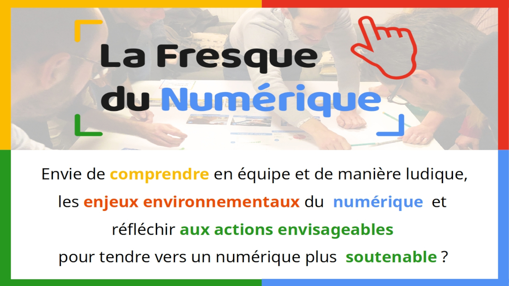
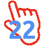

La Fresque du numérique

Les fresques programmées dans les Côtes d'Armor
 Dates et billetterie
La Fresque du numérique est un atelier pour comprendre en équipe et de manière ludique les enjeux environnementaux du numérique
Saviez-vous qu’un ordinateur de 2 kg nécessite de mobiliser 800 kg de matières premières pour sa fabrication ?
Source : ADEME (p.6)
L'Éclosion# vous propose d'organiser un atelier ludique et collaboratif avec une pédagogie similaire à celle de la Fresque du Climat.
Son but est de sensibiliser les participant·e·s aux enjeux environnementaux du numérique, puis
d’expliquer les actions possibles pour avancer vers un numérique plus durable, et enfin d’ouvrir des
discussions sur le sujet entre les participant·e·s.
Un atelier mobilise une demi-journée (3h30) pour 16 participant.e.s par animateurice
Il existe 2 formats différenciés :
Ateliers citoyens
Les fresques programmées dans les Côtes d'Armor
Dates et billetterie
Vous souhaitez organiser des fresques à destination du grand public lors d'un évènement.
Vous souhaitez organiser des fresques à destination des lycéens ou étudiants de votre établissement
Demande d'informations
Ateliers Pro
Atelier à destination des entreprises et organisations publiques.
Vous souhaitez intégrer une sensibilisation en interne et que vos collaboratrices et collaborateurs deviennent parti prenante d'un plan d'action numérique responsable au sein de votre structure.
Demande d'informations
Brochure pro
Léandre Chevalier est référent Côtes d'Armor de l'association la Fresque du numérique et signataire du contrat de licence pro pour pouvoir animer dans le cadre Pro
Site de la Fresque du numérique
Article Ouest-France du 31 mai 2023